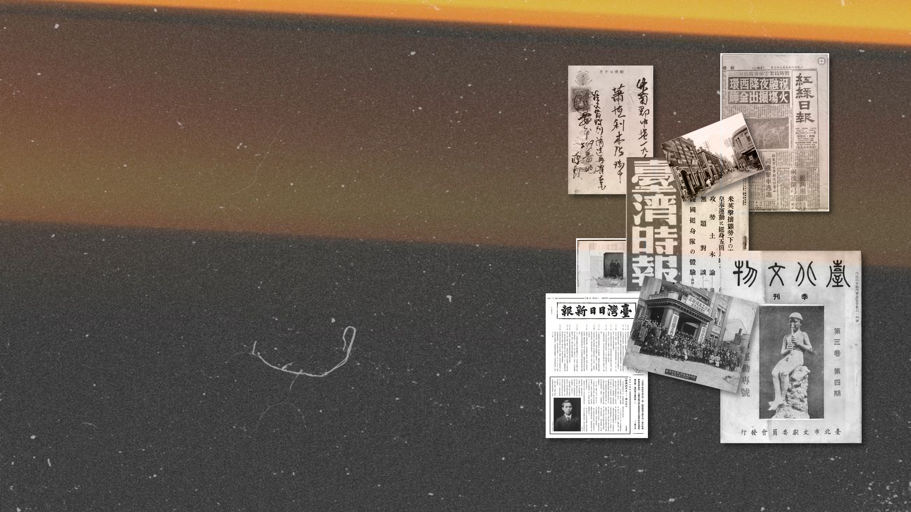
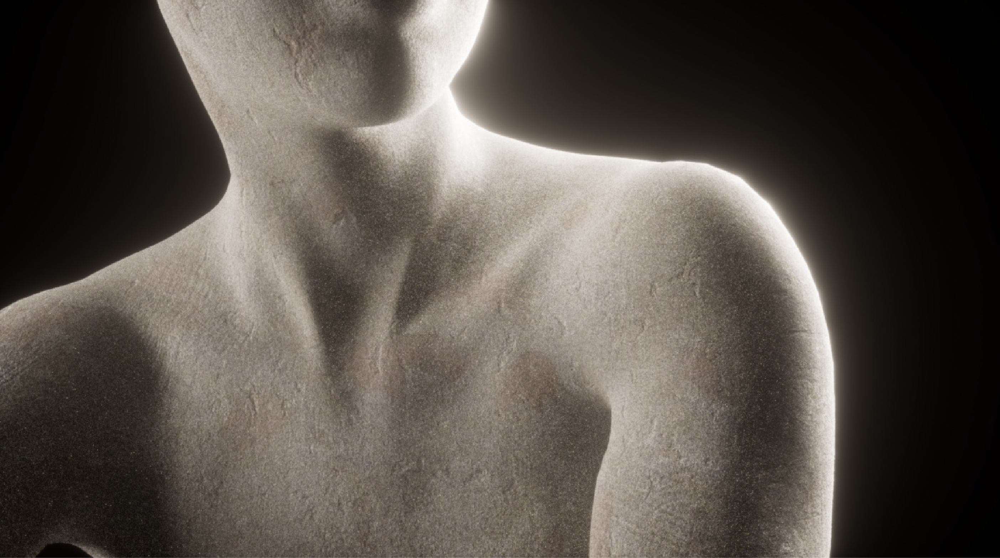
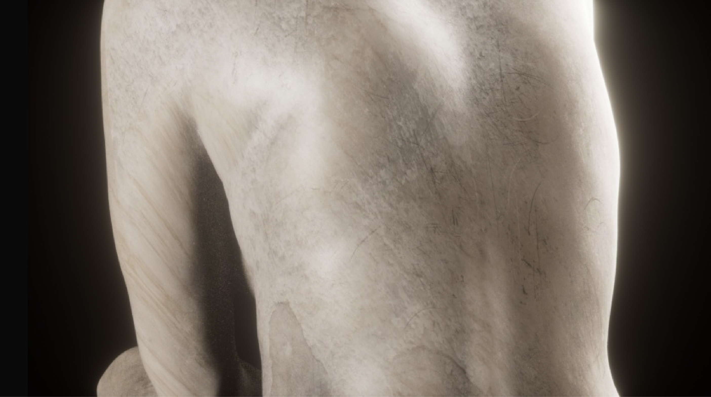
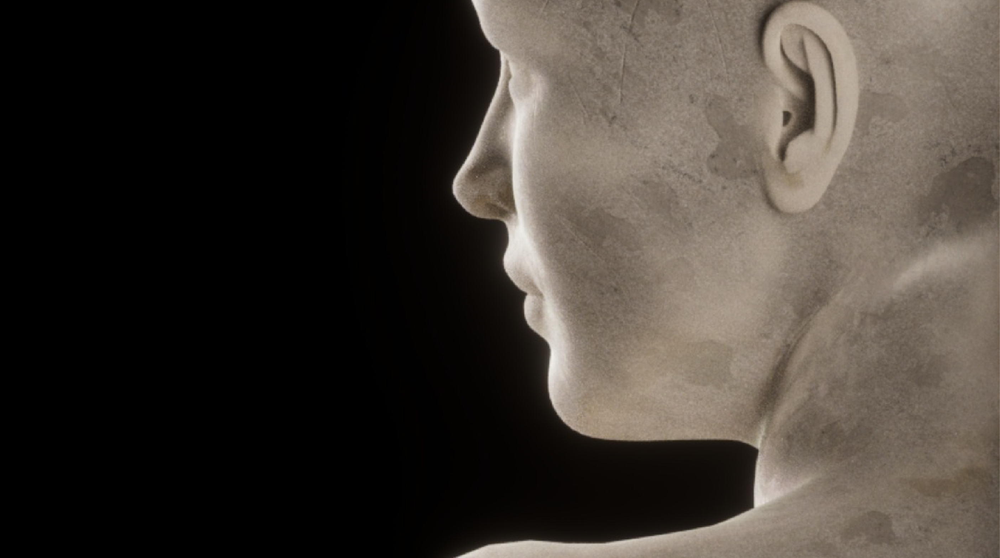
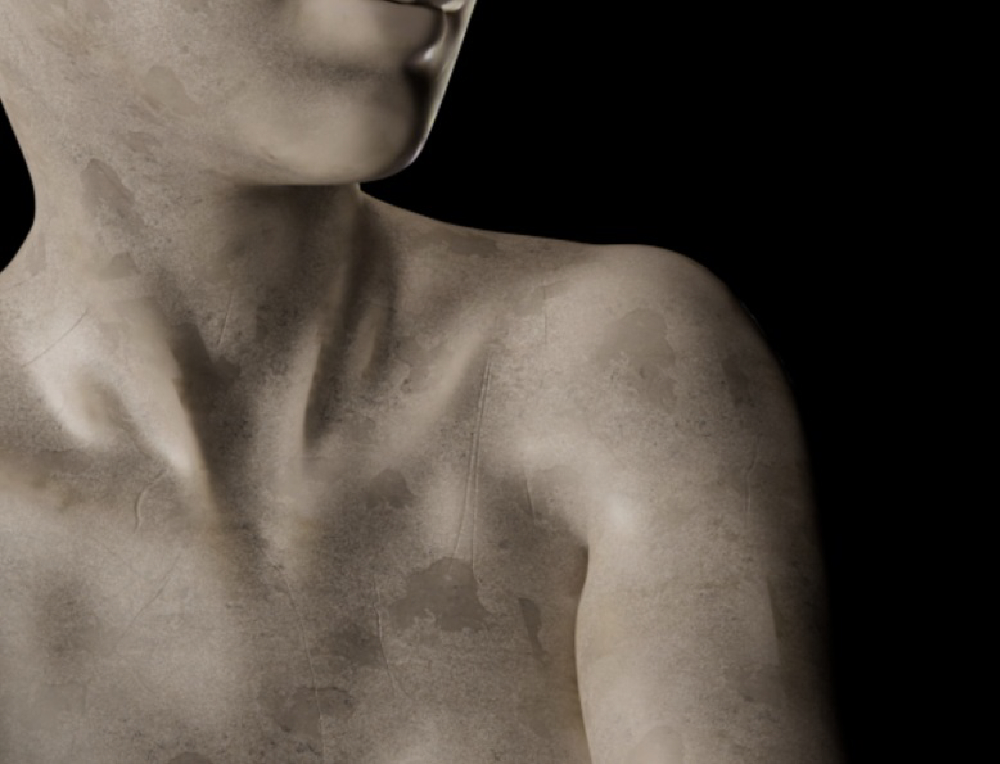
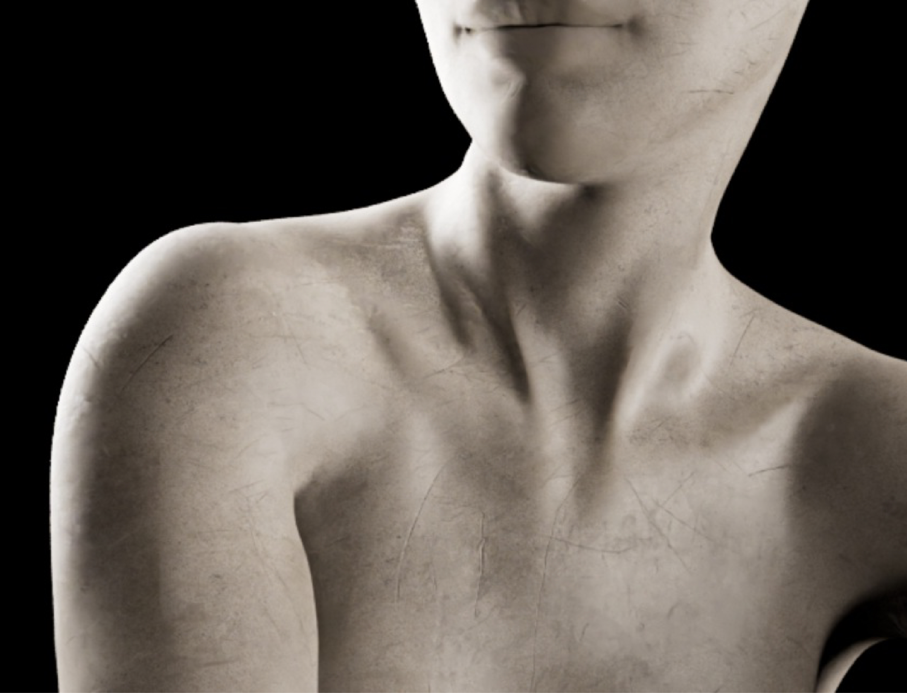
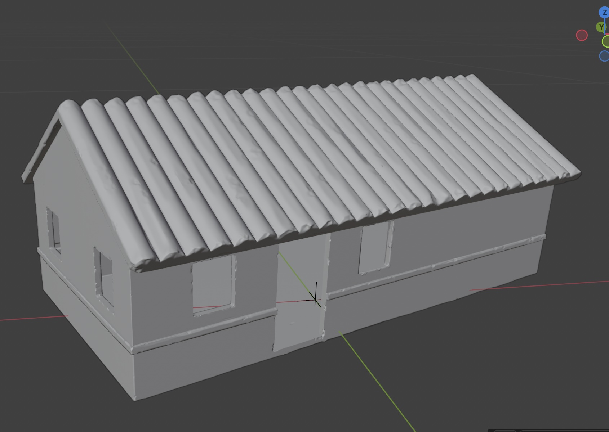
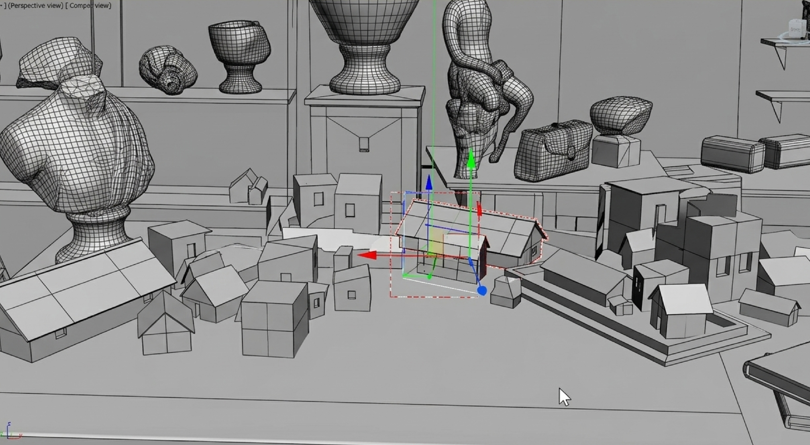
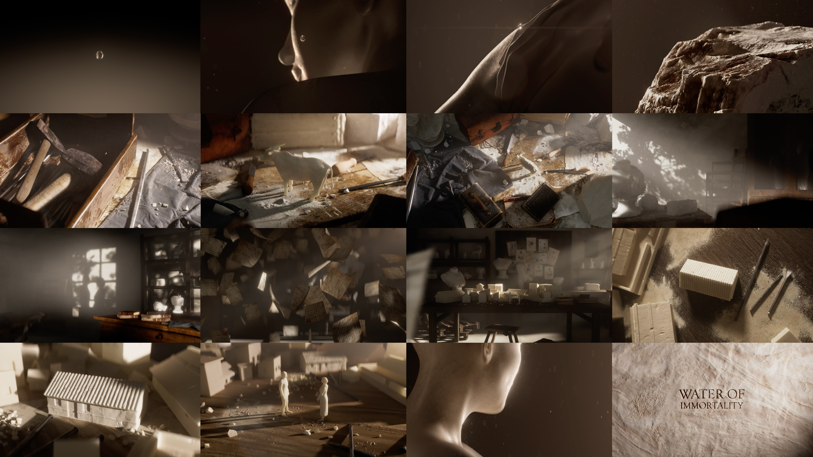

002 · 2025 · Title Sequence
Water of
Immortality
Project Overview
Love,
Sculpture,
and Time
Water of Immortality is a collaborative title sequence developed for a biographical film exploring the life and romantic history of Taiwanese sculptor Huang Tu-Shui. The project traces emotional and historical themes through symbolic visual language, translating sculpture, memory, and devotion into moving image. From initial storyboard development to final animation production, our team worked collectively to construct a cohesive cinematic atmosphere that bridges heritage and intimacy. The sequence aims to evoke both permanence and fragility — reflecting the enduring legacy of art and the transient nature of human relationships.
- Type Animation
- Engine C4D
- Renderer Octane

Phase 01
Storyboard & Lighting
This stage focused on translating the film’s emotional tone into cinematic composition and lighting. Through soft highlights, controlled shadows, and material contrast, the visuals evoke romance, memory, and the tension between permanence and fragility.
Phase 02
Production Process
Models were created in Cinema 4D with a focus on clean geometry and scene composition, while sculptural elements in Blender added organic detail and variation. Material and shader tests explored surface quality, light interaction, and visual consistency through an iterative refinement process.

Material test 1
Material test 2
Material test 3
Material test 4Material
Development
My primary contributions to the project focused on storyboard development and the visual realisation of sculptural materials.
I explored multiple iterations of stone and marble textures and surface treatments in C4D to achieve a balance between historical authenticity and cinematic expression. Particular attention was given to material response under different lighting conditions — refining roughness, subsurface qualities, and shadow depth to enhance tactile realism.

Material test 506 // Process
PRODUCTION
PROCESS
Models were created in Cinema 4D, focusing on clean geometry and composition within the scene. Sculptural elements were developed in Blender to introduce organic detail and variation, particularly for stone-based forms. Material and shader tests were carried out to explore surface qualities, light interaction, and visual consistency across shots. The workflow emphasised iteration and refinement, allowing assets to evolve through testing, adjustment, and integration into the final cinematic sequence.



Contact